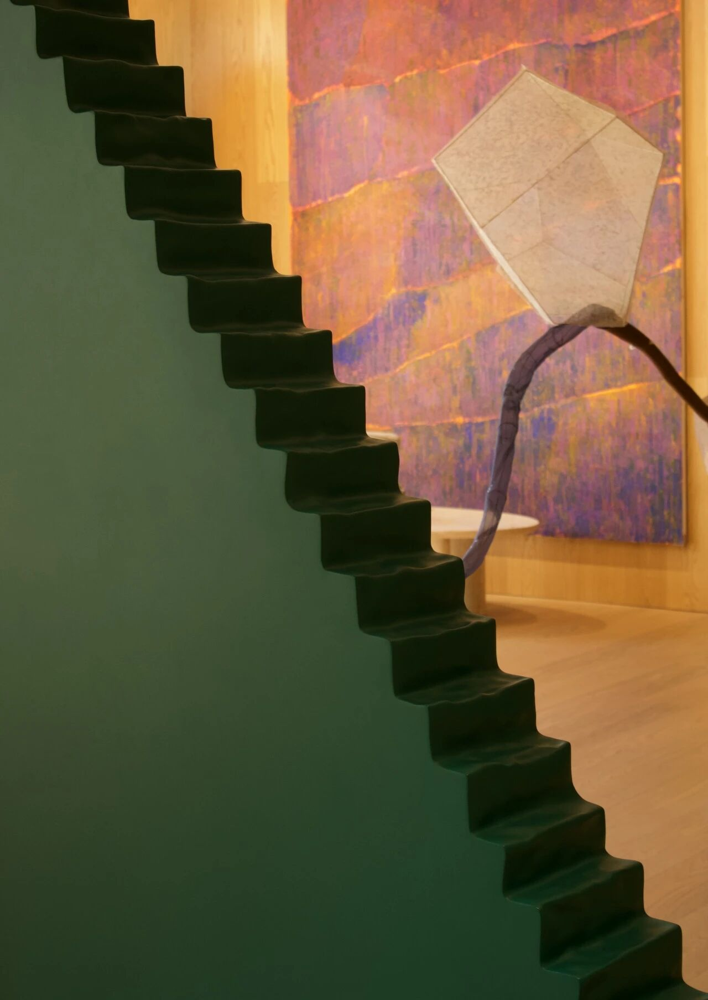

Longlati 收藏委員會Longlati Collection Committee
Longlati 收藏委員會由金佐寧、梁琛、魯鈺與夏天共同組織，連結收藏研究與年輕藝術家的創作實踐。項目以上海為主要現場，關注在此生活或與城市保持聯繫的創作者，尤其是裝置、影像及相關媒介的探索。
委員會透過展覽考察、工作室訪問、藝術家訪談和成員討論形成收藏提案。在作品購藏之外，亦支持材料、技術與空間呈現的發展，並透過研究、討論與文本工作，將藝術家的個人經驗連結至更廣闊的在地文化語境。
The Longlati Collection Committee brings collecting, research and support for young artists into a shared practice in Shanghai. Jointly organized by Gwendoline Cho-ning Kam, Liang Chen, Lu Yu and Ben Xia Tian, it focuses on artists based in, or maintaining a continuing connection with, the city, particularly those working with installation, moving image and related media.
Exhibition visits, studio visits, artist interviews and discussions inform collection proposals. Alongside acquisitions, the Committee supports material, technical and spatial development, while research and writing help situate each practice within a wider cultural context.
Longlati 藏品現場。左：娜布其，《空間外的風景 No. 5》（2015）；中：梁遠葦，《2017.29》（2023）；右：胡曉媛，《Carpel III》（2025）。
Longlati collection view. Left: Nabuqi, A View Beyond Space No. 5 (2015); centre: Yuanwei Liang, 2017.29 (2023); right: Xiaoyuan Hu, Carpel III (2025).
金佐寧
策展人、藝術家、音樂人類學者
Gwendoline Cho-ning Kam
Curator, artist and ethnomusicologist